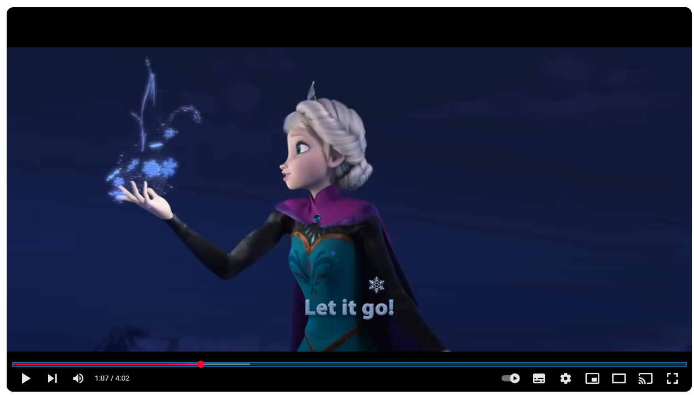

|  |
The snow glows white on the mountain tonight Not a footprint to be seen A kingdom of isolation and it looks like I’m the queen The wind is howling like this swirling storm inside Couldn’t keep it in, heaven knows I tried Don’t let them in, don’t let them see Be the good girl you always have to be Conceal, don’t feel, don’t let them know Well now they know |